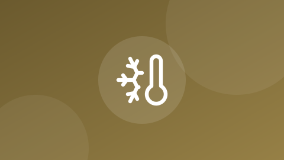

Trousse de secours du kit d’urgence : le contenu de base
Une trousse de secours ne remplace pas une formation. Elle contient de quoi nettoyer une plaie, protéger et alerter. Le guide « Tous responsables » recommande de se former aux gestes qui sauvent. Les formations courtes existent partout en France et sont accessibles sans prérequis.
Informations pratiques, sources officielles (Service-public.fr (gestes qui sauvent), guide « Tous responsables » (SGDSN, 2025)). Elles ne remplacent pas les consignes des autorités. En cas d'urgence, appelez le 112 et suivez les consignes de la préfecture, de la radio et de FR-Alert.
Le contenu de base, sans surcharge
Une trousse utile est une trousse que l’on sait utiliser. Le contenu minimum couvre les petites plaies, les saignements et la protection de la personne qui soigne.
Plaies
- Compresses stériles.
- Pansements adhésifs de tailles variées.
- Bande extensible.
- Sérum physiologique en dosettes.
Protection
- Gants à usage unique.
- Masque.
- Ciseaux à bouts ronds.
- Couverture de survie.
Médicaments
- Antiseptique en dosettes.
- Paracétamol (si toléré).
- Traitement personnel en cours.
- Thermomètre.
Vérifiez les dates de péremption tous les six mois. Adaptez le contenu aux besoins de la famille (enfants, allergies, traitements chroniques).
Se former aux gestes qui sauvent : pourquoi c’est prioritaire
Une trousse ne sert à rien si personne ne sait quoi faire. Les formations aux gestes qui sauvent (GQS) durent quelques heures. Elles apprennent à protéger, alerter et secourir face à un étouffement, un malaise cardiaque, un saignement ou une victime inconsciente.
La formation PSC1 (Prévention et secours civiques de niveau 1) est plus complète et dure une journée. Elle est ouverte à tous. Les inscriptions se font auprès des associations agréées, des pompiers ou via les préfectures.
Organiser sa trousse pour être efficace
- Choisissez une boîte rigide, fermée, identifiable.
- Placez les objets par usage : plaies, protection, médicaments.
- Ajoutez une fiche avec les numéros d’urgence (15, 18, 112) et les traitements de chaque membre de la famille.
- Rangez la trousse dans un endroit accessible, connu de tous, à l’abri de l’humidité.
Questions fréquentes
Puis-je mettre des médicaments dans la trousse ?
Oui, mais seulement ceux que vous savez utiliser et qui sont adaptés à la famille. Les traitements personnels doivent être en quantité suffisante pour 72 heures.
Faut-il une trousse par personne ?
Une trousse familiale suffit, à condition qu’elle contienne les traitements et les tailles de pansements adaptés à chacun.
Les gestes qui sauvent sont-ils payants ?
Certaines sessions sont gratuites, notamment celles organisées par les pompiers ou les préfectures. La formation PSC1 est payante dans la plupart des organismes, avec des tarifs variables.
À partir de quel âge peut-on se former ?
Les initiations aux gestes qui sauvent sont accessibles plus tôt, selon les structures.
Que faire si une plaie saigne beaucoup ?
Appuyez fort sur la plaie avec une compresse ou un tissu propre, allongez la personne et alertez le 15 ou le 112. Ne retirez pas un objet planté.
La couverture de survie est-elle obligatoire dans la trousse ?
Elle n’est pas obligatoire au sens légal, mais elle est fortement recommandée pour prévenir l’hypothermie et protéger une victime.
À lire aussi

Couverture de survieÀ quoi sert vraiment une couverture de survie ? Prévention de l'hypothermie, protection contre le vent, mythes à déconstruire. Checklist à imprimerImprimez la checklist du kit d’urgence 72h tirée du guide officiel. Version simple à cocher + checklist interactive adaptée à votre famille. Gratuit.
Checklist à imprimerImprimez la checklist du kit d’urgence 72h tirée du guide officiel. Version simple à cocher + checklist interactive adaptée à votre famille. Gratuit. Que mettre dans un kit d'urgenceQue mettre dans un kit d’urgence pour tenir 72 heures : eau, nourriture, lumière, radio, soins, papiers. Liste claire tirée du guide officiel + checklist gratuite.
Que mettre dans un kit d'urgenceQue mettre dans un kit d’urgence pour tenir 72 heures : eau, nourriture, lumière, radio, soins, papiers. Liste claire tirée du guide officiel + checklist gratuite.